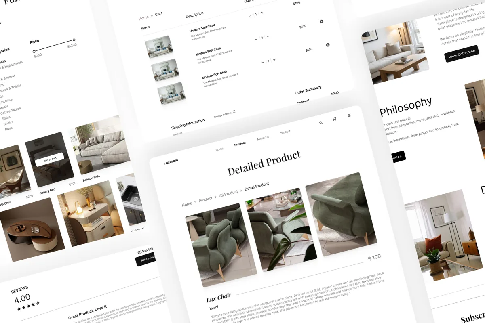

FURNITURE · PRODUCT DISCOVERY
LuxRoom
Một trải nghiệm nội thất được tổ chức quanh không gian sống và chất liệu, để sản phẩm có đủ khoảng thở nhưng người dùng vẫn luôn biết bước tiếp theo.

Bối cảnh, phạm vi và vai trò
LuxRoom là concept tự khởi xướng về trải nghiệm nội thất tuyển chọn tại Việt Nam. Thay vì bắt đầu từ một catalog dày đặc, trải nghiệm dùng căn phòng và ngữ cảnh sử dụng làm điểm vào cho việc khám phá đồ nội thất.
Đóng góp của tôi
UI/UX direction, responsive web design, content hierarchy và front-end implementation.
Phạm vi
Landing narrative, room discovery, product storytelling, room notes và conversation CTA.
Ràng buộc chính
Giữ cảm giác premium và image-led nhưng không biến trải nghiệm thành một gallery khó điều hướng.
Tiêu chí thành công
Người dùng hiểu được material point of view, chọn được một room entry point và tìm thấy next action với ít ma sát.
Giữ cảm xúc mà không làm nặng hành trình
Làm thế nào một trải nghiệm nội thất cao cấp có thể truyền đạt chất liệu, tỷ lệ và sự tự tin mà không khiến đường đi từ cảm hứng đến product detail trở nên nặng nề? Câu trả lời là dùng căn phòng làm ngữ cảnh tổ chức, thay vì chỉ dùng product grid.
Từ tín hiệu đến quyết định
01 / Room as entry point
“Shop by room” cho người dùng một câu hỏi quen thuộc: bạn đang định hình không gian nào? Đây là điểm vào cụ thể hơn một danh mục sản phẩm trừu tượng.
02 / Material before specification
Ngôn ngữ vật liệu và cảm xúc xuất hiện trước lớp thông tin sản phẩm dày hơn, giúp thiết lập bối cảnh trước khi tăng mật độ.
03 / Calmer product role
Sản phẩm được đặt như những vật thể sống cùng không gian, hỗ trợ so sánh mà không dùng merchandising quá mạnh.
04 / Conversation as conversion
Room Notes biến sự chưa chắc chắn thành một đường liên hệ hữu ích: người dùng có thể chia sẻ không gian và hỏi thêm về chất liệu hoặc bố trí.
Thiết kế hiện tại cho phép điều gì?
Build hiện tại biến visual language premium thành một chuỗi quyết định: bắt đầu từ căn phòng, hiểu hướng vật liệu, xem vật thể và chuyển sang trao đổi khi lựa chọn cần thêm ngữ cảnh. Đây là kết quả thiết kế định tính, không phải số liệu commerce đã đo.
Không có product analytics, usability-test findings hoặc purchase data được cung cấp. Bước validation tiếp theo nên kiểm tra room-to-product findability, khả năng hiểu product detail và liệu CTA liên hệ được cảm nhận như hỗ trợ hay như một sales interruption.
Visual hierarchy là một công cụ tạo tin cậy
LuxRoom mạnh hơn khi sự “premium” không đến từ nhiều hiệu ứng mà từ nhịp điệu, khoảng trống và thứ tự thông tin. Vòng lặp tiếp theo nên đào sâu product detail với material, kích thước, delivery và care information trong cùng một nhịp calm/editorial.